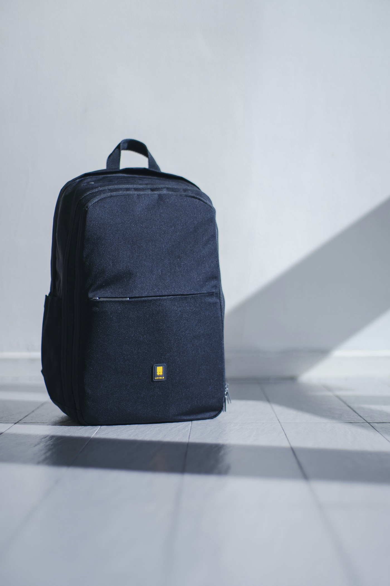

Good things find their way back
lostlink
A little lost.
Never forgotten.
Your everyday things have a place here.
Find what’s missing. Return what matters.
A shared place for your community’s lost & found.
Somewhere, someone’s looking for it.Let’s make the way back a little shorter.
Small acts of care. A more connected community.Report. Reconnect. Return. ↗
01 / The community board
A familiar thing.
A fresh start.
Take a look around.
Something here might be yours.
No items match that search. Try “backpack”, “headphones”, or “camera”.
3 sample reportsPreview board · Illustrative items
02 / A way back
Lost happens.
Found starts here.
A simple path from “where did I leave it?” to “there you are.”
Explore the board- 01
Leave a little detail.
Share what you lost or found, where it was, and a photo to help your community recognize it.
- 02
Make the connection.
Explore possible matches. Share identifying details privately so staff can verify your claim.
- 03
Bring it home.
Once your claim is approved, arrange a handoff with your community’s lost-and-found team.
Someone’s day,
a little better.
It starts with a small thing. It starts with you.
Report an item